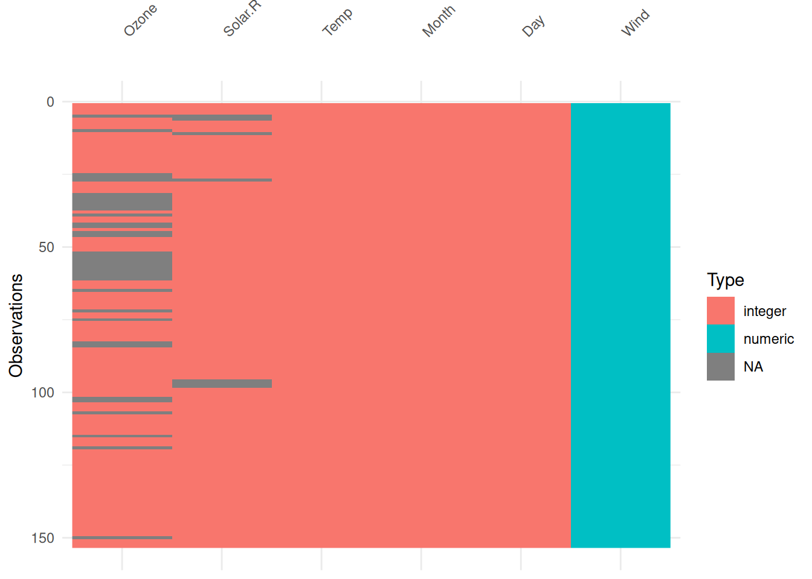

Chapter 2 Data Acquisition and Processing
How this chapter connects. This chapter is the start of the practical pipeline introduced in Section 1.4: get the data into R, check how variables have been interpreted, and make missing values explicit. Section 3.1 then develops what to do once those missing values have been identified, and Chapter 5 shows how the same cleaning decisions can be embedded in a reproducible modelling workflow.
2.1 Obtaining Data
Several datasets are provided for your study of data mining. They come from a variety of fields, including business and commerce, ecology, finance and genetics. As mentioned previously, all of the datasets that we shall study are large, but none are massive. Any computer less than about ten years old should be able to handle them. Instructions for acquiring these data appear as required throughout these notes.
Quite possibly you will have (either now or at some point in the future) data that of your own that you wish to analyze in R. R can import data that is stored in a wide variety of formats. We discuss data importation in the next section.
If you are looking for other data sources for data mining, then there
are a wide variety available on the Web. Here we mention just three. The
bioconductor project, www.bioconductor.org, is a valuable resource for
anyone interested in bioinformatic problems. Bioconductor is designed
for use with R. If economics and finance is your thing then the Yahoo
site finance.yahoo.com provides free access to a range of financial
data. Finally, those who fancy a challenge might like to visit the
Kaggle website www.kaggle.com. Kaggle runs a series of classification
and prediction competitions, some with quite large prizes available!
2.2 Loading Data into R
We’ll be mostly using the readr package for reading data into R. This is
part of the tidyverse set of packages. In general
we’ll be using the tidyverse throughout, at least where we can.
We’ll start most of our code with:
We’ll tend to use CSV (comma separated value) files, for which the
read_csv() command is appropriate.
By default, this should work out of the box for just about all data
sets we use, but some poorly formatted data may need alternatives. In a
real workflow, one of the most important early checks is whether missing
values have been encoded correctly at import time, for example through
the na= argument of read_csv().
This might be easier to see through a specific example, so consider the following command:
#> Rows: 517 Columns: 13
#> ── Column specification ────────────────────────────────────────────────────────
#> Delimiter: ","
#> chr (2): month, day
#> dbl (11): X, Y, FFMC, DMC, DC, ISI, temp, RH, wind, rain, area
#>
#> ℹ Use `spec()` to retrieve the full column specification for this data.
#> ℹ Specify the column types or set `show_col_types = FALSE` to quiet this message.This reads data from the file forestfires.csv, a comma separated
values text file, which is located in the folder ../data which means
“up to the parent folder and into the data folder”. The result
is assigned to a data frame named fires.
Note that has also given us a message about how it has interpreted
the various columns in forestfires.csv, with some being interpreted
using col_double() (numeric, such as X, Y) and some being interpreted
using col_character() (character string, such as month and day).
The facility to load data CSV files provides
the means for importing data from many statistical, spreadsheet and
database packages. Most such packages can save files in a plain text
format: for instance, Excel has the option to save spreadsheets as
.csv (comma separated valued) files. These can then be read into R. As
an alternative, the R package Foreign includes some functions for
direct importation into R from native file types for some packages
(including Minitab, S, SAS, SPSS, Stata, and Systat)5, and
the readxl package can read directly from .xlsx Excel files.
2.3 Organizing the Data in R
The common format for datasets is as an array, with records (also known as observations, cases, or units) as rows and variables (also known as attributes) as columns. The information in each column may be numerical (in the case of quantitative variables) or categorical (in the case of factors6). For example, the first six rows of the goats data (as displayed in R) are
#> # A tibble: 6 × 3
#> Treatment Wt.ini Wt.gain
#> <chr> <dbl> <dbl>
#> 1 standard 21 5
#> 2 standard 24 3
#> 3 standard 21 8
#> 4 standard 22 7
#> 5 standard 23 6
#> 6 standard 26 4where the row numbers identify individual goats, and the columns correspond to the variables in the obvious manner. The number of records is usually denoted \(n\), and the number of variables \(p\).
The name for a data structure of this type is a tibble or data frame7.
As we just saw, this is the type of object
that is created when you employ the read_csv command.
Sometimes you may wish to create a data set directly rather than reading it in
from a file. This is generally useful for small data sets, and can be done using
the tibble, data.frame, or tribble functions, as we demonstrate with the
following example.
Example 2.1 Creating data in R
Suppose we wish to create a small data set that looks something like this:
x y group
21 5 A
24 3 A
21 8 B
22 7 B
34 1 C
18 8 Cwhere we have three columns x, y and group and six entries.
We can define this a number of ways as the below code illustrates.
one <- data.frame(x = c(21, 24, 21, 22, 34, 18),
y = c(5, 3, 8, 7, 1, 8),
group = c("A", "A", "B", "B", "C", "C"))
two <- tibble(x = c(21, 24, 21, 22, 34, 18),
y = c(5, 3, 8, 7, 1, 8),
group = rep(c("A", "B", "C"), each=2))
three <- tribble(~x, ~y, ~group,
21, 5, "A",
24, 3, "A",
21, 8, "B",
22, 7, "B",
34, 1, "C",
18, 8, "C")
one#> x y group
#> 1 21 5 A
#> 2 24 3 A
#> 3 21 8 B
#> 4 22 7 B
#> 5 34 1 C
#> 6 18 8 C#> # A tibble: 6 × 3
#> x y group
#> <dbl> <dbl> <chr>
#> 1 21 5 A
#> 2 24 3 A
#> 3 21 8 B
#> 4 22 7 B
#> 5 34 1 C
#> 6 18 8 C#> # A tibble: 6 × 3
#> x y group
#> <dbl> <dbl> <chr>
#> 1 21 5 A
#> 2 24 3 A
#> 3 21 8 B
#> 4 22 7 B
#> 5 34 1 C
#> 6 18 8 CAs you can see, each of these give the same data, but the method of construction is a little different:
The
data.framemethod returns adata.framerather than atibble, so the printing is a little different.The
tibblemethod is otherwise the same as thedata.framemethod, though we have used therepcommand here to repeat theA,B,Cgroupings each two times. This only slightly saves on typing!The
tribblecommand (row-wise tibble) is the one that is most natural for entering data that is tabular like this. The tilde character~is used for specifying the names, and then everything else is just separated by commas, and because it is filled row-wise rather than column-wise can be written so that it maintains the natural ordering.
We have one final comment on data organization before we move on.
Remember that when you use read_csv, R will assume by default that
any column of numbers corresponds to a quantitative variable. Consider
the following example.
#> Rows: 27 Columns: 2
#> ── Column specification ────────────────────────────────────────────────────────
#> Delimiter: ","
#> dbl (2): bite, species
#>
#> ℹ Use `spec()` to retrieve the full column specification for this data.
#> ℹ Specify the column types or set `show_col_types = FALSE` to quiet this message.#> # A tibble: 27 × 2
#> bite species
#> <dbl> <dbl>
#> 1 17.5 1
#> 2 15.62 1
#> 3 11.68 1
#> 4 13.61 1
#> 5 11.63 1
#> 6 14.28 1
#> 7 9.72 1
#> 8 8.76 1
#> 9 16.6 1
#> 10 15.16 1
#> # ℹ 17 more rows#> # A tibble: 27 × 3
#> bite species `sqrt(species)`
#> <dbl> <dbl> <dbl>
#> 1 17.5 1 1
#> 2 15.62 1 1
#> 3 11.68 1 1
#> 4 13.61 1 1
#> 5 11.63 1 1
#> 6 14.28 1 1
#> 7 9.72 1 1
#> 8 8.76 1 1
#> 9 16.6 1 1
#> 10 15.16 1 1
#> # ℹ 17 more rows#> # A tibble: 27 × 2
#> bite species
#> <dbl> <fct>
#> 1 17.5 1
#> 2 15.62 1
#> 3 11.68 1
#> 4 13.61 1
#> 5 11.63 1
#> 6 14.28 1
#> 7 9.72 1
#> 8 8.76 1
#> 9 16.6 1
#> 10 15.16 1
#> # ℹ 17 more rows#> Error in `mutate()`:
#> ℹ In argument: `sqrt(species)`.
#> Caused by error in `Math.factor()`:
#> ! 'sqrt' not meaningful for factorsHere we are dealing with a (small) dataset comprising the bite sizes
measured on 27 fossils of prehistoric fish. These fish are classified by
species, denoted simply 1, 2, 3. When the data are first read in the
species variable is interpreted as numerical, and so you can perform
numeric operations (like taking a square root). Of course, the numbers
are merely labels here. We can turn the numeric variable into a factor
using the as.factor command. Once R recognizes that species is a
factor (i.e. a categorical variable) it will no longer permit such
numerical operations.
The visdat package is useful for visualising a data.frame or tibble
to assess things like variable types.
Example 2.2 Visualising variable types in the airquality dataset
The airquality dataset, included with R in the datasets package, contains
153 observations on 6 variables (Ozone, Solar.R, Wind, Temp, Month,
and Day). We can visualise the structure of these using the vis_dat() function
from visdat:

As can be seen, vis_dat() shows us that the first 5 columns are ‘integer’ type
(whole numbers) while the Wind column is ‘numeric’ (double precision real value).
We can also see where missing values are - in particular the Ozone variable has a bunch
of missing values.
2.4 Missing Values
Real datasets often contain missing values. The reasons are various. For example, in socio-economic surveys some respondents are unwilling to provide what they regard as quite personal information (e.g. gross income, marital status). In scientific experiments one may fail to record information from all the experimental units: perhaps someone dropped a Petri dish, or one of the lab rats died. When missing values are present we need to think carefully about what should be done about them, and provide details of what was done in any reported analysis of the data8.
When you are presented with data in a text file, the presence of missing values might be indicated in any of the following ways.
In a comma separate file (
.csv) a missing value will often be indicated by an absence of any value between two consecutive commas. These missing values will be handled appropriately by R when usingread_csv.Sometimes missing values are specified in text files by sequences like
9999or-9999. This generally works OK, so long as the value 9999 (or whatever alternative is used) is not a plausible value for the variable in question! Nonetheless, one of the disadvantages of this representation is that it is possible that the presence of the missing values will go unnoticed, and the data will get analysed as if the 9999 entries are bona fide data. Note that it is possible to set the argumentnaofread_csvso that R will correctly interpret missing values specified in this manner.A common alternative is to represent missing values in a text file by
NA(for ‘not available’). Of course, one has to be careful that the stringNAdoes not have some credible meaning in a text field9.
Regardless of the representation of missing values in the text file,
once that data are in R the missing values are denoted by NA. R
recognizes missing values as a special type of data, and has methods for
handling datasets with missing values when conducting certain kinds of
analysis. Nonetheless, in many cases the presence of one or more missing
values will prevent R from returning a numerical result. We will look at
ways of dealing with this problem in section @ref{sec:missing}.
Example 2.3 Husbands and Wives
To illustrate handling of missing values we turn to a modestly sized dataset on husbands and wives. (The data source is Hand, Daly, Lunn, McConway and Ostrowski (1993), A Handbook of Small Datasets, Chapman and Hall.) Each of the 199 records corresponds to a husband-wife pair, for which the following variables are recorded.
H.Age |
Husband’s current age (in years) |
H.Ht |
Husband’s height in millimetres |
W.Age |
Wife’s current age (in years) |
W.Ht |
Wife’s height in millimetres |
H.Age.Marriage |
Husband’s age (in years) when first married |
The data contain a number of missing values, represented in the text file of the data by the number 9999. These data are processed in the following R snippet.
#> Rows: 199 Columns: 5
#> ── Column specification ────────────────────────────────────────────────────────
#> Delimiter: ","
#> dbl (5): H.Age, H.Ht, W.Age, W.Ht, H.Age.Marriage
#>
#> ℹ Use `spec()` to retrieve the full column specification for this data.
#> ℹ Specify the column types or set `show_col_types = FALSE` to quiet this message.#> Rows: 199
#> Columns: 5
#> $ H.Age <dbl> 49, 25, 40, 52, 58, 32, 43, 42, 47, 31, 26, 40, 35, 45,…
#> $ H.Ht <dbl> 1809, 1841, 1659, 1779, 1616, 1695, 1730, 1753, 1740, 1…
#> $ W.Age <dbl> 43, 28, 30, 57, 52, 27, 52, 9999, 43, 23, 25, 39, 32, 9…
#> $ W.Ht <dbl> 1590, 1560, 1620, 1540, 1420, 1660, 1610, 1635, 1580, 1…
#> $ H.Age.Marriage <dbl> 25, 19, 38, 26, 30, 23, 33, 30, 26, 26, 23, 23, 31, 41,…#> ── Data Summary ────────────────────────
#> Values
#> Name husbands
#> Number of rows 199
#> Number of columns 5
#> _______________________
#> Column type frequency:
#> numeric 5
#> ________________________
#> Group variables None
#>
#> ── Variable type: numeric ──────────────────────────────────────────────────────
#> skim_variable n_missing complete_rate mean sd p0 p25 p50 p75
#> 1 H.Age 0 1 42.623 11.646 20 33 43 52
#> 2 H.Ht 0 1 1732.5 68.751 1559 1691 1725 1774
#> 3 W.Age 0 1 1491.9 3522.5 18 32.5 43 55
#> 4 W.Ht 0 1 1601.9 62.435 1410 1560 1600 1650
#> 5 H.Age.Marriage 0 1 225.84 1403.3 16 22 24 28
#> p100 hist
#> 1 64 ▅▇▆▇▅
#> 2 1949 ▂▆▇▃▁
#> 3 9999 ▇▁▁▁▂
#> 4 1760 ▁▃▇▆▁
#> 5 9999 ▇▁▁▁▁#> # A tibble: 1 × 1
#> `mean(W.Age)`
#> <dbl>
#> 1 1491.9husb_fixed <- husbands |>
naniar::replace_with_na(replace = list(W.Age = 9999,
H.Age.Marriage = 9999))
husb_fixed |>
summarise(mean(W.Age),
mean(W.Age, na.rm=TRUE),
mean(H.Age.Marriage, na.rm=TRUE))#> # A tibble: 1 × 3
#> `mean(W.Age)` `mean(W.Age, na.rm = TRUE)` `mean(H.Age.Marriage, na.rm = TRUE)`
#> <dbl> <dbl> <dbl>
#> 1 NA 40.682 25.364Some points to note.
The command
glimpseprovides a short summary of a data frame, including the variable type (in this exampledbl, i.e. integer for all variables) and a listing of the first few elements for each variable.The
skimr::skimcommand applied to a data frame gives summaries for all variables. Note thatW.AgeandH.Age.Marriagehave maximum (p100) values of 9999, corresponding to missing data.If we carelessly forget to recode the missing values, then we will get nonsense in numerical values. For example, it would appear that the mean age of the wives is just a shade under 1500 years.
The
replace_with_nafunction from thenaniarpackage (as it is not already loaded vialibrary, we utilise this function by prefacing with the package name and two colons) replaces the entries given in thereplacelist withNA. In this case we’ve asked to replace 9999 in both theW.AgeandH.Age.Marriagecolumns. We’ve saved the result into thehusb_fixedtibble.Applying the function
meanto a variable containing missing values will by default returnNAas a result. However, if we set the optional argumentna.rm=TRUE(i.e. remove missing values) then we get the mean for the remaining data. In the case of wives’ ages, that is just over 40.
In this example, as the special value that denotes missingness is consistent
across all columns, we could use the na argument of read_csv. It defaults
to c("", "NA"), to detect the empty string or the string NA, but we could
replace this with "9999":
#> ── Data Summary ────────────────────────
#> Values
#> Name husbands
#> Number of rows 199
#> Number of columns 5
#> _______________________
#> Column type frequency:
#> numeric 5
#> ________________________
#> Group variables None
#>
#> ── Variable type: numeric ──────────────────────────────────────────────────────
#> skim_variable n_missing complete_rate mean sd p0 p25 p50 p75
#> 1 H.Age 0 1 42.623 11.646 20 33 43 52
#> 2 H.Ht 0 1 1732.5 68.751 1559 1691 1725 1774
#> 3 W.Age 29 0.85427 40.682 11.414 18 32 41 50
#> 4 W.Ht 0 1 1601.9 62.435 1410 1560 1600 1650
#> 5 H.Age.Marriage 4 0.97990 25.364 5.6382 16 22 24 27
#> p100 hist
#> 1 64 ▅▇▆▇▅
#> 2 1949 ▂▆▇▃▁
#> 3 64 ▅▇▇▆▅
#> 4 1760 ▁▃▇▆▁
#> 5 52 ▇▇▂▁▁2.5 Summary
This chapter has focused on the first stage of a data mining workflow: getting data into R in a form that can be analysed reliably.
Import choices matter. Variable types, file paths, and missing-value encodings should be checked immediately rather than discovered only after modelling has begun.
Tools such as
glimpse(),skimr::skim(), and simple summaries are useful for spotting implausible values, sentinel codes, and type mismatches early.Making missingness explicit with
NAis an important handoff to the missing-data methods in Section 3.1 and to the preprocessing pipelines developed in Chapter 5.
Looking ahead, Section 3.1 studies how to describe, visualise, and handle missing values once they have been imported correctly.
R can also interact with database systems as well, although the process is a little more complex.↩︎
As noted previously, categorical variables in R are typically referred to as factors. The different categories themselves are termed the levels of the factor. Hence the factor
Treatmentin the goats dataset has two levels,standardandintensivedistinguishing the drenching routine employed.↩︎There are some subtle differences between tibbles and data.frames. Hopefully we won’t hit too many of them!↩︎
An important example occurs with data from clinical trials, where the statistical analysis is typically expected to account for intention to treat. This prevents a misleadingly statistical results in cases where subjects who are responding poorly have a disproportionate chance of dropping out of the trial.↩︎
You might run into problems if the data include a list of chemical elements, for example! The chemical symbol for sodium is Na, from the Latin word natrium.↩︎